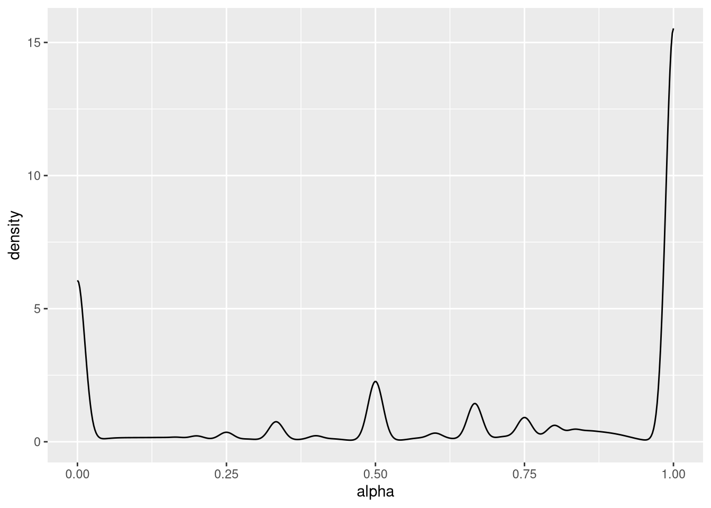
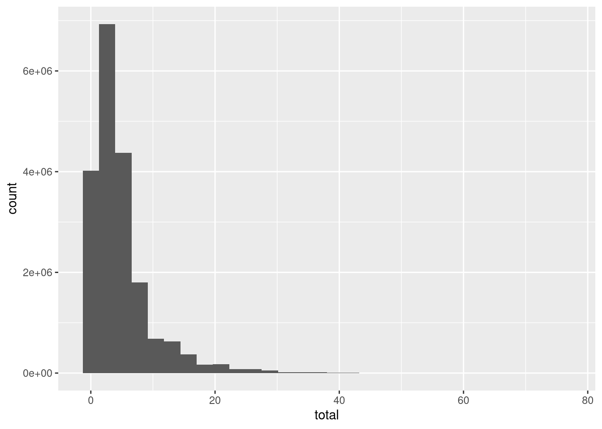
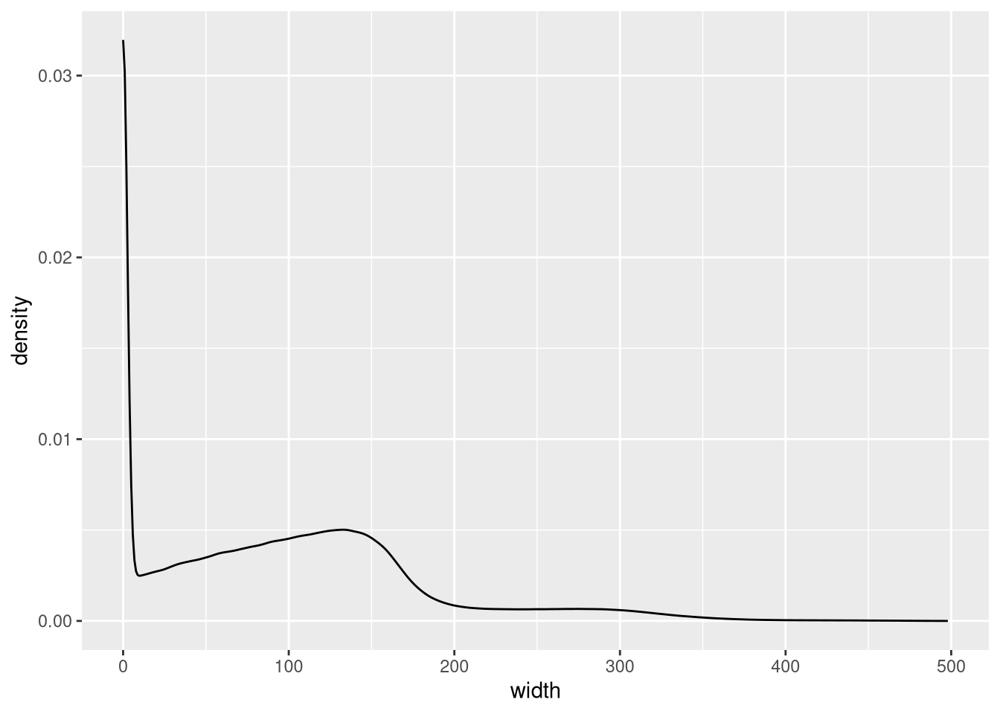
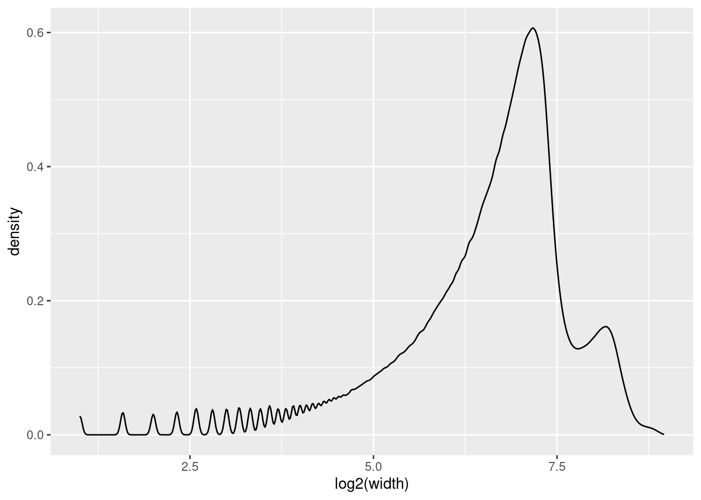
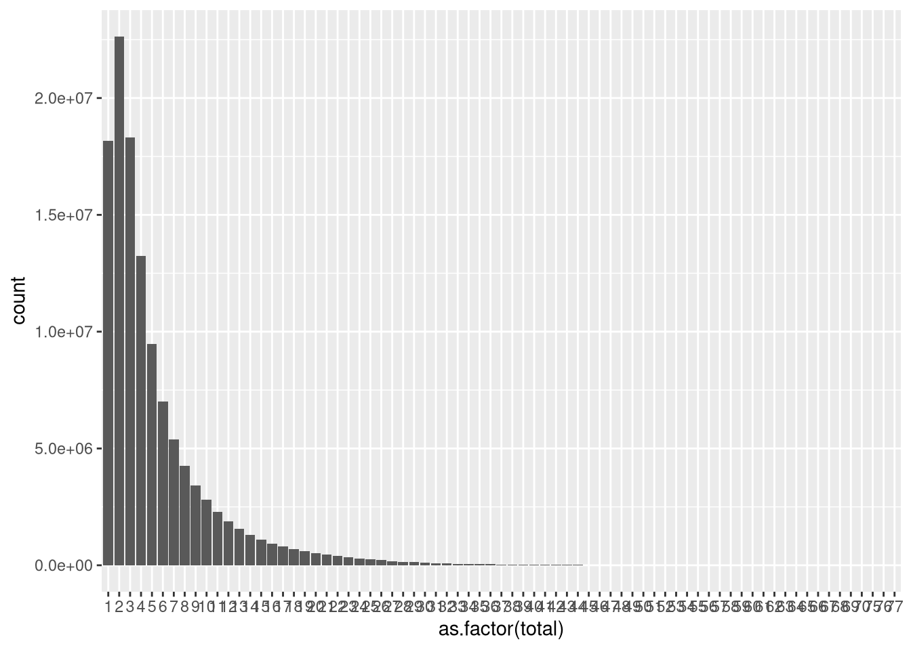
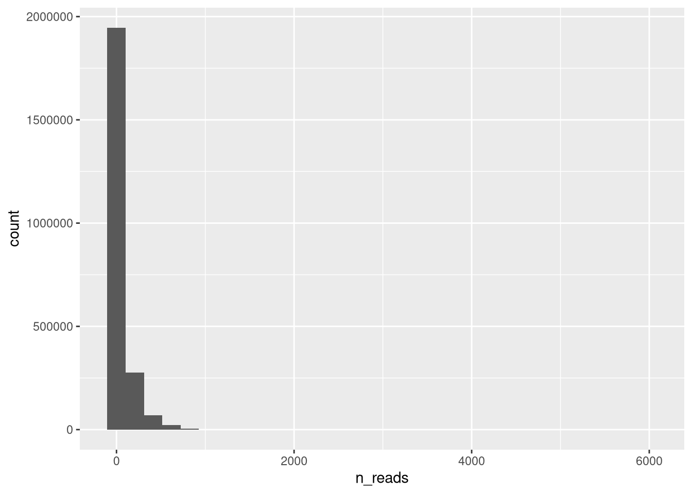
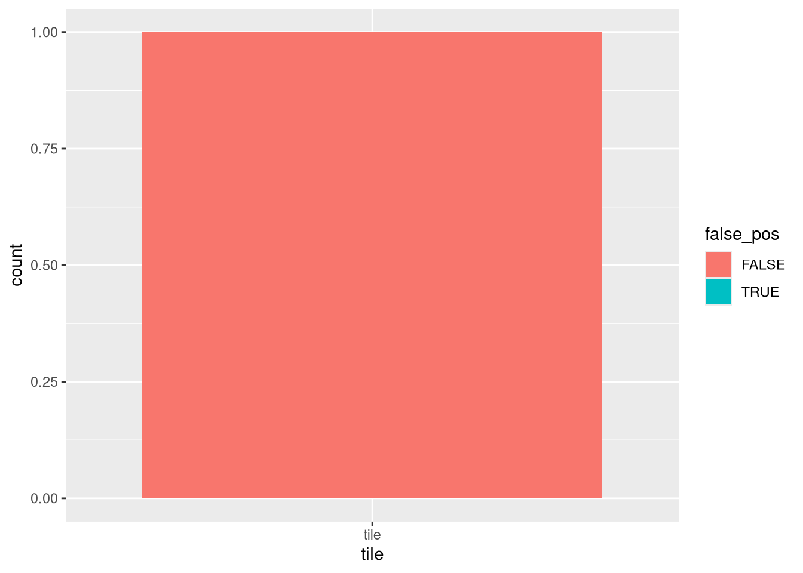

Last updated: 2026-07-21
Checks: 7 0
Knit directory: methyl_nano_cf/analysis/
This reproducible R Markdown analysis was created with workflowr (version 1.7.1). The Checks tab describes the reproducibility checks that were applied when the results were created. The Past versions tab lists the development history.
Great! Since the R Markdown file has been committed to the Git repository, you know the exact version of the code that produced these results.
Great job! The global environment was empty. Objects defined in the global environment can affect the analysis in your R Markdown file in unknown ways. For reproduciblity it’s best to always run the code in an empty environment.
The command set.seed(20250606) was run prior to running
the code in the R Markdown file. Setting a seed ensures that any results
that rely on randomness, e.g. subsampling or permutations, are
reproducible.
Great job! Recording the operating system, R version, and package versions is critical for reproducibility.
Nice! There were no cached chunks for this analysis, so you can be confident that you successfully produced the results during this run.
Great job! Using relative paths to the files within your workflowr project makes it easier to run your code on other machines.
Great! You are using Git for version control. Tracking code development and connecting the code version to the results is critical for reproducibility.
The results in this page were generated with repository version bf03ca9. See the Past versions tab to see a history of the changes made to the R Markdown and HTML files.
Note that you need to be careful to ensure that all relevant files for
the analysis have been committed to Git prior to generating the results
(you can use wflow_publish or
wflow_git_commit). workflowr only checks the R Markdown
file, but you know if there are other scripts or data files that it
depends on. Below is the status of the Git repository when the results
were generated:
Ignored files:
Ignored: .RData
Ignored: .Rproj.user/
Ignored: analysis/.RData
Untracked files:
Untracked: analysis/pleaseRun.Rmd
Untracked: renv.lock
Untracked: renv/
Unstaged changes:
Modified: .Rprofile
Modified: _workflowr.yml
Modified: analysis/coverageAndSummaryAnalysis.Rmd
Modified: analysis/deAnalysisWithDtuRegion.Rmd
Modified: analysis/workflow.Rmd
Modified: code/seqFastqToReadMeth.txt
Note that any generated files, e.g. HTML, png, CSS, etc., are not included in this status report because it is ok for generated content to have uncommitted changes.
These are the previous versions of the repository in which changes were
made to the R Markdown (analysis/processEmseq.Rmd) and HTML
(docs/processEmseq.html) files. If you’ve configured a
remote Git repository (see ?wflow_git_remote), click on the
hyperlinks in the table below to view the files as they were in that
past version.
| File | Version | Author | Date | Message |
|---|---|---|---|---|
| Rmd | bf03ca9 | caitlinpage | 2026-07-21 | wflow_publish("processEmseq.Rmd") |
| Rmd | 59da46f | caitlinpage | 2026-07-21 | process emseq healthy samples and do dtu for false positives |
library(BSgenome.Hsapiens.UCSC.hg38)Loading required package: GenomeInfoDbLoading required package: BiocGenerics
Attaching package: 'BiocGenerics'The following objects are masked from 'package:stats':
IQR, mad, sd, var, xtabsThe following objects are masked from 'package:base':
anyDuplicated, aperm, append, as.data.frame, basename, cbind,
colnames, dirname, do.call, duplicated, eval, evalq, Filter, Find,
get, grep, grepl, intersect, is.unsorted, lapply, Map, mapply,
match, mget, order, paste, pmax, pmax.int, pmin, pmin.int,
Position, rank, rbind, Reduce, rownames, sapply, saveRDS, setdiff,
table, tapply, union, unique, unsplit, which.max, which.minLoading required package: S4VectorsLoading required package: stats4
Attaching package: 'S4Vectors'The following object is masked from 'package:utils':
findMatchesThe following objects are masked from 'package:base':
expand.grid, I, unnameLoading required package: IRangesLoading required package: BSgenomeLoading required package: GenomicRangesLoading required package: BiostringsLoading required package: XVector
Attaching package: 'Biostrings'The following object is masked from 'package:base':
strsplitLoading required package: BiocIOLoading required package: rtracklayerWarning: replacing previous import 'S4Arrays::makeNindexFromArrayViewport' by
'DelayedArray::makeNindexFromArrayViewport' when loading 'SummarizedExperiment'
Attaching package: 'rtracklayer'The following object is masked from 'package:BiocIO':
FileForFormatlibrary(data.table)
Attaching package: 'data.table'The following object is masked from 'package:GenomicRanges':
shiftThe following object is masked from 'package:IRanges':
shiftThe following objects are masked from 'package:S4Vectors':
first, secondlibrary(plyranges)
Attaching package: 'plyranges'The following object is masked from 'package:data.table':
betweenThe following object is masked from 'package:XVector':
sliceThe following object is masked from 'package:IRanges':
sliceThe following object is masked from 'package:stats':
filterlibrary(tidyr)
Attaching package: 'tidyr'The following object is masked from 'package:S4Vectors':
expandlibrary(stringr)
library(dplyr)
Attaching package: 'dplyr'The following objects are masked from 'package:plyranges':
between, n, n_distinctThe following objects are masked from 'package:data.table':
between, first, lastThe following objects are masked from 'package:Biostrings':
collapse, intersect, setdiff, setequal, unionThe following object is masked from 'package:XVector':
sliceThe following objects are masked from 'package:GenomicRanges':
intersect, setdiff, unionThe following object is masked from 'package:GenomeInfoDb':
intersectThe following objects are masked from 'package:IRanges':
collapse, desc, intersect, setdiff, slice, unionThe following objects are masked from 'package:S4Vectors':
first, intersect, rename, setdiff, setequal, unionThe following objects are masked from 'package:BiocGenerics':
combine, intersect, setdiff, unionThe following objects are masked from 'package:stats':
filter, lagThe following objects are masked from 'package:base':
intersect, setdiff, setequal, unionlibrary(ggplot2)
library(OpTiles)Warning: replacing previous import 'GenomicRanges::shift' by
'data.table::shift' when loading 'OpTiles'Warning: replacing previous import 'data.table::first' by 'dplyr::first' when
loading 'OpTiles'Warning: replacing previous import 'biomaRt::select' by 'dplyr::select' when
loading 'OpTiles'Warning: replacing previous import 'GenomicRanges::intersect' by
'dplyr::intersect' when loading 'OpTiles'Warning: replacing previous import 'data.table::last' by 'dplyr::last' when
loading 'OpTiles'Warning: replacing previous import 'GenomicRanges::union' by 'dplyr::union'
when loading 'OpTiles'Warning: replacing previous import 'data.table::between' by 'dplyr::between'
when loading 'OpTiles'Warning: replacing previous import 'GenomicRanges::setdiff' by 'dplyr::setdiff'
when loading 'OpTiles'Warning: replacing previous import 'dplyr::combine' by 'gridExtra::combine'
when loading 'OpTiles'Warning: replacing previous import 'stringr::str_wrap' by 'xfun::str_wrap' when
loading 'OpTiles'Warning: replacing previous import 'tidyr::unite' by 'methylKit::unite' when
loading 'OpTiles'library(edgeR)Loading required package: limma
Attaching package: 'limma'The following object is masked from 'package:BiocGenerics':
plotMAfolder: /researchers/caitlin.page/cf_nano/fastq_tothill_emseq_healthy
CpG_OT_PRJ240785_LPRJ240785_S1_L004_R1_001_bismark_bt2_pe.txt
bis <- fread("/researchers/caitlin.page/cf_nano/fastq_tothill_emseq_healthy/CpG_OT_PRJ240785_LPRJ240785_S1_L004_R1_001_bismark_bt2_pe.txt")Warning in
fread("/researchers/caitlin.page/cf_nano/fastq_tothill_emseq_healthy/CpG_OT_PRJ240785_LPRJ240785_S1_L004_R1_001_bismark_bt2_pe.txt"):
Detected 1 column names but the data has 5 columns (i.e. invalid file). Added 4
extra default column names at the end.bis[1:5,] Bismark methylation extractor version v0.25.1 V2 V3
<char> <char> <char>
1: A01052:208:HLH7MDSXC:4:1101:8612:1000_1:N:0:TTACCGAC+CGTATTCG + chr15
2: A01052:208:HLH7MDSXC:4:1101:5231:1000_1:N:0:TTACCGAC+CGTATTCG - chr12
3: A01052:208:HLH7MDSXC:4:1101:8612:1000_1:N:0:TTACCGAC+CGTATTCG + chr15
4: A01052:208:HLH7MDSXC:4:1101:5231:1000_1:N:0:TTACCGAC+CGTATTCG - chr12
5: A01052:208:HLH7MDSXC:4:1101:5231:1000_1:N:0:TTACCGAC+CGTATTCG - chr12
V4 V5
<int> <char>
1: 100293126 Z
2: 53492711 z
3: 100293167 Z
4: 53492758 z
5: 53492779 zprocess_wgbs_short <- function(bismark, bed = NULL) {
read <- bismark
names(read) <- c("read_id", "strand", "seqnames", "start", "meth_status")
read$end <- read$start
read_overlap <- read
read_overlap[, meth_status := ifelse(meth_status == "Z", "M", "U")]
read_overlap[, meth_pattern := paste0(meth_status, collapse = ""), by = read_id]
read_overlap[, num_meth := str_count(meth_pattern, pattern = "M")]
read_overlap[, total := str_length(meth_pattern)]
read_overlap[, alpha := num_meth/total]
read_overlap[, genom_positions := paste0(start, collapse = ","), by = read_id]
read_overlap <- read_overlap %>% .[order(.$read_id),]
read_overlap[, read_start := min(start), by = read_id]
read_overlap[, read_end := max(start), by = read_id]
read_overlap
}em_healthy_785 <- process_wgbs_short(bis)
saveRDS(em_healthy_785, "/researchers/caitlin.page/cf_nano/r_output/emseq_healthy_785.rds")just_read <- readRDS("/researchers/caitlin.page/cf_nano/r_output/emseq_healthy_785.rds")
just_read <- just_read %>% distinct(read_id, seqnames, read_start, read_end, meth_pattern, num_meth, total, alpha, genom_positions)just_read %>%
ggplot(aes(x = alpha)) +
geom_density()
just_read %>%
ggplot(aes(x = total)) +
geom_histogram()`stat_bin()` using `bins = 30`. Pick better value with `binwidth`.
just_read %>% mutate(width = read_end - read_start) %>%
ggplot(aes(x = width)) +
geom_density()
just_read %>% mutate(width = read_end - read_start) %>%
ggplot(aes(x = log2(width))) +
geom_density()Warning: Removed 4022170 rows containing non-finite outside the scale range
(`stat_density()`).
source("../processData.R")
bis <- fread("/researchers/caitlin.page/cf_nano/fastq_tothill_emseq_healthy/CpG_OT_PRJ240786_LPRJ240786_S2_L004_R1_001_bismark_bt2_pe.txt")
em_healthy_786 <- process_wgbs(bis)
saveRDS(em_healthy_786, "/researchers/caitlin.page/cf_nano/r_output/emseq_healthy_786.rds")
bis <- fread("/researchers/caitlin.page/cf_nano/fastq_tothill_emseq_healthy/CpG_OT_PRJ241037_LPRJ241037_S20_L004_R1_001_bismark_bt2_pe.txt")
em_healthy_037 <- process_wgbs(bis)
saveRDS(em_healthy_037, "/researchers/caitlin.page/cf_nano/r_output/emseq_healthy_037.rds")# process files
em_healthy_785 <- readRDS("/researchers/caitlin.page/cf_nano/r_output/emseq_healthy_785.rds")
em_healthy_786 <- readRDS("/researchers/caitlin.page/cf_nano/r_output/emseq_healthy_786.rds")
em_healthy_787 <- readRDS("/researchers/caitlin.page/cf_nano/r_output/emseq_healthy_787.rds")
em_healthy_789 <- readRDS("/researchers/caitlin.page/cf_nano/r_output/emseq_healthy_789.rds")
em_healthy_036 <- readRDS("/researchers/caitlin.page/cf_nano/r_output/emseq_healthy_036.rds")
em_healthy_037 <- readRDS("/researchers/caitlin.page/cf_nano/r_output/emseq_healthy_037.rds")# cpgs
seqs <- seqnames(BSgenome.Hsapiens.UCSC.hg38::BSgenome.Hsapiens.UCSC.hg38)[1:22]
cg_sites <- lapply(seqs, function(x) {
cbind(data.frame(Biostrings::matchPattern("CG", BSgenome.Hsapiens.UCSC.hg38::BSgenome.Hsapiens.UCSC.hg38[[x]])),
seqnames = x
)}) %>% bind_rows()Warning in .local(x, row.names, optional, ...): 'optional' argument was ignored
Warning in .local(x, row.names, optional, ...): 'optional' argument was ignored
Warning in .local(x, row.names, optional, ...): 'optional' argument was ignored
Warning in .local(x, row.names, optional, ...): 'optional' argument was ignored
Warning in .local(x, row.names, optional, ...): 'optional' argument was ignored
Warning in .local(x, row.names, optional, ...): 'optional' argument was ignored
Warning in .local(x, row.names, optional, ...): 'optional' argument was ignored
Warning in .local(x, row.names, optional, ...): 'optional' argument was ignored
Warning in .local(x, row.names, optional, ...): 'optional' argument was ignored
Warning in .local(x, row.names, optional, ...): 'optional' argument was ignored
Warning in .local(x, row.names, optional, ...): 'optional' argument was ignored
Warning in .local(x, row.names, optional, ...): 'optional' argument was ignored
Warning in .local(x, row.names, optional, ...): 'optional' argument was ignored
Warning in .local(x, row.names, optional, ...): 'optional' argument was ignored
Warning in .local(x, row.names, optional, ...): 'optional' argument was ignored
Warning in .local(x, row.names, optional, ...): 'optional' argument was ignored
Warning in .local(x, row.names, optional, ...): 'optional' argument was ignored
Warning in .local(x, row.names, optional, ...): 'optional' argument was ignored
Warning in .local(x, row.names, optional, ...): 'optional' argument was ignored
Warning in .local(x, row.names, optional, ...): 'optional' argument was ignored
Warning in .local(x, row.names, optional, ...): 'optional' argument was ignored
Warning in .local(x, row.names, optional, ...): 'optional' argument was ignoredem_healthy_036 <- data.frame(em_healthy_036)
em_healthy_037 <- data.frame(em_healthy_037)
em_healthy_785 <- data.frame(em_healthy_785)
em_healthy_786 <- data.frame(em_healthy_786)
em_healthy_787 <- data.frame(em_healthy_787)
em_healthy_789 <- data.frame(em_healthy_789)
em_healthy_785$sample <- "a1"
em_healthy_036$sample <- "a2"
em_healthy_787$sample <- "a3"
em_healthy_786$sample <- "b1"
em_healthy_037$sample <- "b2"
em_healthy_789$sample <- "b3"# combine samples
cols <- c("seqnames", "read_start", "read_end", "strand", "read_id", "sample", "meth_pattern", "num_meth", "total", "alpha", "genom_positions")
all_samples <- rbind(em_healthy_785[,cols],
em_healthy_036[,cols],
em_healthy_787[,cols],
em_healthy_786[,cols],
em_healthy_037[,cols],
em_healthy_789[,cols])
colnames(all_samples)[2:3] <- c("start", "end")
saveRDS(all_samples, "/researchers/caitlin.page/cf_nano/r_output/emseq_all_healthy.rds")all_samples <- readRDS("/researchers/caitlin.page/cf_nano/r_output/emseq_all_healthy.rds")all_samples %>% distinct(seqnames) seqnames
1 chr1
2 chr8
3 chr5
4 chr19
5 chr9
6 chr20
7 chr7
8 chr13
9 chr21
10 chr12
11 chr6
12 chr11
13 chr4
14 chr10
15 chr16
16 chr14
17 chr2
18 chr3
19 chr17
20 chr18
21 chrX
22 chr15
23 chr22
24 KI270902.1
25 KI270442.1
26 GL000251.2
27 KI270774.1
28 KI270853.1
29 KI270900.1
30 GL000225.1
31 KI270729.1
32 ML143371.1
33 GL000216.2
34 KI270926.1
35 KI270879.1
36 KI270731.1
37 KI270898.1
38 KI270719.1
39 KZ208915.1
40 KI270438.1
41 KI270721.1
42 GL000214.1
43 KI270878.1
44 KI270877.1
45 GL000224.1
46 KI270768.1
47 KI270795.1
48 KI270742.1
49 KQ031385.1
50 KI270938.1
51 KI270805.1
52 KI270711.1
53 GL000258.2
54 GL000219.1
55 ML143355.1
56 GL877875.1
57 KI270713.1
58 GL000252.2
59 KI270708.1
60 GL000194.1
61 KZ208917.1
62 KI270743.1
63 GL000253.2
64 KI270785.1
65 KV880768.1
66 ML143358.1
67 KZ559103.1
68 GL000220.1
69 KI270913.1
70 GL383575.2
71 GL000218.1
72 KI270706.1
73 KI270860.1
74 KI270744.1
75 KI270780.1
76 KZ208916.1
77 KQ031389.1
78 KI270927.1
79 KI270725.1
80 KN196479.1
81 KI270821.1
82 KI270817.1
83 KI270909.1
84 KI270901.1
85 KI270857.1
86 KN538364.1
87 KN538372.1
88 KI270831.1
89 KQ983258.1
90 KI270862.1
91 KV575244.1
92 KI270872.1
93 KI270812.1
94 KI270905.1
95 KI270813.1
96 chrY
97 KI270811.1
98 KI270709.1
99 KI270850.1
100 GL383563.3
101 GL000009.2
102 KI270310.1
103 KI270734.1
104 KI270714.1
105 KI270733.1
106 KI270854.1
107 KQ759762.1
108 KI270803.1
109 KI270753.1
110 GL000205.2
111 KI270870.1
112 GL000208.1
113 KQ458386.1
114 KI270736.1
115 KI270770.1
116 KV880763.1
117 KI270903.1
118 GL339449.2
119 KI270748.1
120 KI270786.1
121 KI270776.1
122 GL383556.1
123 KI270766.1
124 KI270724.1
125 KI270723.1
126 KQ090025.1
127 KI270818.1
128 KI270792.1
129 ML143380.1
130 KI270538.1
131 KI270712.1
132 ML143354.1
133 KI270893.1
134 KZ208906.1
135 KI270732.1
136 KI270855.1
137 KI270863.1
138 KI270754.1
139 ML143366.1
140 KI270846.1
141 GL949752.1
142 KV766192.1
143 KI270835.1
144 KI270749.1
145 KI270836.1
146 KI270757.1
147 GL000256.2
148 GL000221.1
149 KI270782.1
150 GL383527.1
151 KI270467.1
152 KI270806.1
153 KN196487.1
154 KB021644.2
155 KQ090016.1
156 KI270833.1
157 KI270746.1
158 KN538361.1
159 KI270720.1
160 KI270772.1
161 KI270807.1
162 KI270847.1
163 KI270765.1
164 GL949746.1
165 GL949742.1
166 chrM
167 KI270925.1
168 KI270755.1
169 KZ208921.1
170 KN196484.1
171 KQ983255.1
172 KI270832.1
173 GL383569.1
174 KI270861.1
175 ML143345.1
176 KI270928.1
177 GL000257.2
178 KI270869.1
179 KI270871.1
180 KI270908.1
181 KI270717.1
182 KZ559112.1
183 KI270750.1
184 KI270788.1
185 ML143364.1
186 KI270728.1
187 KZ208914.1
188 KI270819.1
189 ML143372.1
190 ML143377.1
191 GL383522.1
192 JH159137.1
193 KI270735.1
194 JH159146.1
195 KQ759759.1
196 KQ458385.1
197 KI270303.1
198 JH159147.1
199 KI270875.1
200 KI270851.1
201 KZ208913.1
202 KI270769.1
203 GL000008.2
204 KI270839.1
205 KI270897.1
206 GL000255.2
207 KI270722.1
208 KI270868.1
209 GL000250.2
210 KI270804.1
211 KI270845.1
212 GL383572.1
213 KI270810.1
214 GL383583.2
215 KV575243.1
216 KI270816.1
217 KI270924.1
218 KI270519.1
219 KQ090026.1
220 KN196472.1
221 KI270773.1
222 KI270320.1
223 KI270809.1
224 ML143343.1
225 KI270911.1
226 KN196485.1
227 GL949747.2
228 KI270822.1
229 GL949753.2
230 GL000254.2
231 KQ090027.1
232 GL383542.1
233 KI270716.1
234 KI270508.1
235 KV766194.1
236 GL383545.1
237 KI270904.1
238 KI270738.1
239 KI270797.1
240 KQ458382.1
241 KI270745.1
242 KI270800.1
243 KI270798.1
244 KI270814.1
245 KI270856.1
246 KI270895.1
247 KI270322.1
248 GL383573.1
249 KI270894.1
250 GL383578.2
251 KI270582.1
252 KZ208918.1
253 GL383530.1
254 KI270837.1
255 KI270509.1
256 GL383564.2
257 KI270896.1
258 KI270834.1
259 KQ983256.1
260 KI270808.1
261 KI270789.1
262 GL383566.1
263 GL000213.1
264 KI270707.1
265 GL383581.2
266 KQ090015.1
267 KQ090028.1
268 KN196477.1
269 KI270824.1
270 GL383551.1
271 KI270759.1
272 KI270760.1
273 KQ031390.1
274 KI270937.1
275 KI270844.1
276 KI270829.1
277 KV766198.1
278 KI270435.1
279 KZ208922.1
280 GL383577.2
281 KI270827.1
282 KI270590.1
283 GL383557.1
284 KI270710.1
285 KI270756.1
286 KI270512.1
287 KI270802.1
288 KQ458388.1
289 KN196483.1
290 KI270741.1
291 ML143352.1
292 KI270588.1
293 JH636055.2
294 KI270864.1
295 KZ559109.1
296 KI270784.1
297 KZ208910.1
298 GL383533.1
299 KI270791.1
300 KI270849.1
301 KQ090021.1
302 ML143378.1
303 KI270751.1
304 KZ208912.1
305 KI270730.1
306 KQ090022.1
307 KZ559111.1
308 KQ458383.1
309 KQ031383.1
310 GL383582.2
311 KI270737.1
312 KI270859.1
313 KI270330.1
314 KQ458384.1
315 KI270507.1
316 GL383570.1
317 KI270912.1
318 KI270848.1
319 KI270337.1
320 KN538368.1
321 KZ559100.1
322 KI270304.1
323 KI270815.1
324 GL383555.2
325 KI270793.1
326 GL383547.1
327 KZ559107.1
328 GL383568.1
329 KQ090017.1
330 KZ208909.1
331 KN196478.1
332 KI270715.1
333 ML143353.1
334 KI270826.1
335 GL383521.1
336 ML143348.1
337 ML143369.1
338 KI270511.1
339 GL383567.1
340 KI270761.1
341 KN538370.1
342 KI270936.1
343 KN538373.1
344 KI270329.1
345 KI270873.1
346 KV766193.1
347 KQ090018.1
348 KI270580.1
349 GL383550.2
350 KI270866.1
351 GL000226.1
352 KI270775.1
353 KI270907.1
354 KI270718.1
355 GL383574.1
356 JH159136.1
357 GL383531.1
358 KN538371.1
359 ML143341.1
360 KI270420.1
361 GL383552.1
362 KI270726.1
363 KI270779.1
364 KI270448.1
365 KQ090020.1
366 KI270747.1
367 GL383549.1
368 KQ090023.1
369 KI270910.1
370 KI270411.1
371 KI270876.1
372 KQ983257.1
373 KI270777.1
374 KI270838.1
375 KI270591.1
376 KI270515.1
377 KI270781.1
378 KN196474.1
379 GL949751.2
380 ML143374.1
381 KQ090013.1
382 JH159148.1
383 KI270820.1
384 KI270767.1
385 GL383526.1
386 GL383553.2
387 KI270787.1
388 KI270518.1
389 GL383532.1
390 KI270589.1
391 KI270583.1
392 KZ559114.1
393 KN196482.1
394 KI270763.1
395 KV766197.1
396 KV766196.1
397 KI270522.1
398 KQ759760.1
399 KN538360.1
400 KI270584.1
401 ML143350.1
402 ML143347.1
403 KI270727.1
404 ML143344.1
405 KI270510.1
406 ML143359.1
407 KI270830.1
408 ML143379.1
409 KI270382.1
410 KI270874.1
411 KI270899.1
412 ML143367.1
413 KI270466.1
414 KI270302.1
415 KI270593.1
416 KZ208904.1
417 KI270794.1
418 KZ208908.1
419 KI270881.1
420 GL383554.1
421 KI270764.1
422 GL877876.1
423 KI270739.1
424 KN538366.1
425 KI270762.1
426 KZ559116.1
427 KQ031384.1
428 KN538367.1
429 GL383571.1
430 ML143382.1
431 KZ559115.1
432 KV880764.1
433 KI270858.1
434 KI270516.1
435 KQ031387.1
436 GL383576.1
437 KV880767.1
438 ML143361.1
439 KI270581.1
440 ML143368.1
441 KI270799.1
442 KN538369.1
443 GL000195.1
444 KI270887.1
445 GL383580.2
446 KZ559105.1
447 ML143370.1
448 KI270587.1
449 KI270843.1
450 KZ559110.1
451 KI270517.1
452 KZ208920.1
453 KI270865.1
454 KI270363.1
455 KQ090024.1
456 KI270311.1
457 KZ559102.1
458 ML143365.1
459 KI270468.1
460 KI270783.1
461 KI270465.1
462 GL383519.1
463 KQ458387.1
464 KI270801.1
465 KI270935.1
466 KI270362.1
467 KZ559113.1
468 KI270384.1
469 KZ208919.1
470 KZ208907.1
471 KI270317.1
472 GL383534.2
473 KI270378.1
474 KI270771.1
475 KI270521.1
476 KI270934.1
477 KI270778.1
478 ML143360.1
479 KI270842.1
480 KI270841.1
481 KQ090014.1
482 KI270852.1
483 KI270386.1
484 KN196476.1
485 ML143357.1
486 KI270544.1
487 KN538362.1
488 KI270395.1
489 KV575258.1
490 KV766199.1
491 KV766195.1
492 GL383546.1
493 KI270758.1
494 KI270823.1
495 ML143376.1
496 KZ208923.1
497 GL383541.1
498 KI270418.1
499 KV880766.1
500 KI270867.1
501 KZ559106.1
502 KI270790.1
503 KZ559104.1
504 KV575257.1
505 KI270740.1
506 KN538363.1
507 KI270880.1
508 GL949750.2
509 KQ090019.1
510 KI270888.1
511 KI270825.1
512 KV880765.1
513 KI270796.1
514 KZ559101.1
515 KB663609.1
516 GL383518.1
517 ML143381.1
518 KI270840.1
519 GL949749.2
520 KZ208905.1
521 KQ031386.1
522 ML143362.1
523 KI270422.1
524 KI270391.1
525 GL383579.2
526 KI270383.1
527 KI270381.1
528 KI270891.1
529 KN196486.1
530 KI270930.1
531 KN196481.1
532 KZ559108.1
533 KI270530.1
534 KZ208911.1
535 KI270429.1
536 KI270884.1
537 KI270425.1
538 KQ031388.1
539 GL949748.2
540 KV575249.1
541 KZ208924.1
542 KI270366.1
543 KQ759761.1
544 KI270921.1
545 KN196473.1
546 ML143346.1
547 ML143351.1
548 GL383539.1
549 GL582966.2
550 KI270336.1
551 ML143375.1
552 GL383520.2
553 KI270579.1
554 GL383565.1
555 ML143356.1
556 KN196475.1
557 KI270892.1
558 KI270305.1
559 KI270392.1
560 ML143373.1
561 KI270315.1
562 KI270396.1
563 KI270414.1
564 KI270423.1
565 KI270312.1
566 KI270906.1
567 KN196480.1
568 KI270417.1
569 GL383528.1
570 KI270393.1
571 KI270387.1
572 KV575246.1
573 KI270886.1
574 KI270364.1
575 ML143342.1
576 KI270918.1
577 KI270419.1
578 KI270412.1
579 KI270424.1
580 ML143385.1all_samples <- all_samples %>% filter(seqnames %in% seqs)
all_samples <- distinct(all_samples)# make tiles
cols <- c("seqnames", "start")
for_op <- all_samples[,cols]
colnames(for_op)[1] <- "chr"
for_op$end <- for_op$start
for_op$strand <- "*"
for_op <- for_op %>% group_by(chr, start, end, strand) %>% summarise(coverage = n()) %>% ungroup()`summarise()` has grouped output by 'chr', 'start', 'end'. You can override
using the `.groups` argument.for_op$numCs <- for_op$coverage - 1
for_op$numTs <- for_op$coverage - for_op$numCsmr <- new(
"methylRaw",
for_op,
sample.id = "sample1",
assembly = "hg38",
context = "CpG",
resolution = "base"
)
length_region <- 500
tiles <- methylKit::tileMethylCounts(mr,win.size=length_region,step.size=length_region,cov.bases = 0)
tilesdf_all <- methylKit::getData(tiles)chr_vector <- unique(as.character(tiles$chr))
chr <- chr_vector[1]
results <- merging_consecutive_regions(mr[mr$chr == chr,], tiles[tiles$chr == chr,],
da_thr = length_region, cb_thr = length_region)
res <- results
for (i in 2:length(chr_vector)) {
r <- merging_consecutive_regions(mr[mr$chr == chr_vector[i],], tiles[tiles$chr == chr_vector[i],],
da_thr = length_region, cb_thr = length_region)
res <- rbind(res, r)
}saveRDS(res, "/researchers/caitlin.page/cf_nano/r_output/optiles_all_emseq.rds")optiles_all <- res
optiles_all <- optiles_all %>% mutate(width = end - start + 1)
colnames(optiles_all)[1] <- "seqnames"
optiles_all$index <- 1:nrow(optiles_all)
saveRDS(optiles_all, "/researchers/caitlin.page/cf_nano/r_output/optiles_all_emseq.rds")optiles_all <- readRDS("/researchers/caitlin.page/cf_nano/r_output/optiles_all_emseq.rds")# overlap tiles and reads
overlap_pos <- find_overlaps(as_granges(optiles_all), as_granges(all_samples)) %>% data.frame()all_samples %>%
ggplot(aes(x = as.factor(total))) +
geom_bar()
overlap_pos %>% group_by(region_id) %>% summarise(n_reads = n()) %>%
ggplot(aes(x = n_reads)) +
geom_histogram()`stat_bin()` using `bins = 30`. Pick better value with `binwidth`.
# dtu
dtu_optile <- overlap_pos %>% filter(total >= 3) %>%
distinct(sample, read_id, alpha, region_id) %>%
mutate(alpha_group = case_when(alpha < 0.2 ~ "a < 0.2",
alpha > 0.8 ~ "a > 0.8",
alpha >= 0.2 & alpha <= 0.4 ~ "0.2 <= a <= 0.4",
alpha > 0.4 & alpha < 0.6 ~ "0.4 < a < 0.6",
TRUE ~ "0.6 <= a <= 0.8"))
dtu_optile <- dtu_optile %>%
mutate(transcript = paste0(region_id, "_", alpha_group)) %>%
group_by(sample, transcript) %>%
summarise(transcript_count = n()) %>% ungroup() %>% data.frame()
# build matrix of "transcript" counts - transcript rows, sample as columns
dtu_optile <- dtu_optile %>% pivot_wider(names_from = sample, values_from = transcript_count)
dtu_optile[is.na(dtu_optile)] <- 0
dtu_optile$gene_id <- sub("_.*", "", dtu_optile$transcript)
# DTU analysis with edgeR
## Alicia prefers gene method over Simes method (documentation slightly confusing about difference)
y <- DGEList(as.matrix(dtu_optile[,2:7]), group = c(1,1,1,2,2,2), genes = dtu_optile[,c("gene_id", "transcript")])
design <- model.matrix(~ c(1,1,1,2,2,2), data = y$samples)
fit <- glmQLFit(y, design, robust=TRUE)
ds <- diffSpliceDGE(fit, coef = 2, geneid = "gene_id", exonid = "transcript")
ts.gene_optiles <- topSpliceDGE(ds, test = "gene", number = Inf)
ts.gene_optiles <- ts.gene_optiles %>%
mutate(region_id = gene_id) %>%
separate_wider_delim(gene_id, delim = ":", names = c("seqnames", "gene_id")) %>%
mutate(seqnames = gsub("chrchr", "chr", seqnames)) %>%
separate_wider_delim(gene_id, delim = "-", names = c("start", "end"))
ts.gene_optiles$start <- as.double(ts.gene_optiles$start)
ts.gene_optiles$end <- as.double(ts.gene_optiles$end)
ts.gene_optiles$dtu_rank <- 1:nrow(ts.gene_optiles)
saveRDS(ts.gene_optiles, "/researchers/caitlin.page/cf_nano/r_output/dtu_tiles_emseq_healthy.rds")emseq_tiles <- readRDS("/researchers/caitlin.page/cf_nano/r_output/dtu_tiles_emseq_healthy.rds")emseq_tiles %>% mutate(false_pos = ifelse(FDR < 0.05, TRUE, FALSE), tile = "tile") %>%
ggplot(aes(x = tile, fill = false_pos)) +
geom_bar(position = "fill")
emseq_tiles %>% filter(FDR < 0.05)# A tibble: 11 × 9
seqnames start end NExons gene.F P.Value FDR region_id dtu_rank
<chr> <dbl> <dbl> <dbl> <dbl> <dbl> <dbl> <chr> <int>
1 chr19 16945540 1.69e7 5 13.4 7.46e-11 5.20e-5 chrchr19… 1
2 chr4 186204152 1.86e8 5 11.6 2.08e- 9 4.86e-4 chrchr4:… 2
3 chr16 1311516 1.31e6 5 11.6 2.09e- 9 4.86e-4 chrchr16… 3
4 chr21 45555614 4.56e7 5 10.4 1.96e- 8 3.43e-3 chrchr21… 4
5 chr12 26317425 2.63e7 5 10.1 3.74e- 8 5.22e-3 chrchr12… 5
6 chr10 13504094 1.35e7 5 9.69 8.18e- 8 9.51e-3 chrchr10… 6
7 chr16 79263001 7.93e7 5 9.50 1.16e- 7 1.15e-2 chrchr16… 7
8 chr1 91555588 9.16e7 5 9.36 1.52e- 7 1.32e-2 chrchr1:… 8
9 chr1 19645553 1.96e7 5 8.67 5.63e- 7 4.36e-2 chrchr1:… 9
10 chr19 8965734 8.97e6 5 8.54 7.11e- 7 4.96e-2 chrchr19… 10
11 chr8 38335501 3.83e7 4 10.4 7.83e- 7 4.97e-2 chrchr8:… 1111 false positives I’ll take it
sessionInfo()R version 4.4.1 (2024-06-14)
Platform: x86_64-pc-linux-gnu
Running under: Red Hat Enterprise Linux 9.6 (Plow)
Matrix products: default
BLAS/LAPACK: FlexiBLAS OPENBLAS-OPENMP; LAPACK version 3.9.0
locale:
[1] LC_CTYPE=en_AU.UTF-8 LC_NUMERIC=C
[3] LC_TIME=en_AU.UTF-8 LC_COLLATE=en_AU.UTF-8
[5] LC_MONETARY=en_AU.UTF-8 LC_MESSAGES=en_AU.UTF-8
[7] LC_PAPER=en_AU.UTF-8 LC_NAME=C
[9] LC_ADDRESS=C LC_TELEPHONE=C
[11] LC_MEASUREMENT=en_AU.UTF-8 LC_IDENTIFICATION=C
time zone: Australia/Melbourne
tzcode source: system (glibc)
attached base packages:
[1] stats4 stats graphics grDevices utils datasets methods
[8] base
other attached packages:
[1] edgeR_4.4.2 limma_3.62.2
[3] OpTiles_0.1.0 ggplot2_3.5.2
[5] dplyr_1.1.4 stringr_1.5.1
[7] tidyr_1.3.1 plyranges_1.26.0
[9] data.table_1.17.8 BSgenome.Hsapiens.UCSC.hg38_1.4.5
[11] BSgenome_1.74.0 rtracklayer_1.66.0
[13] BiocIO_1.16.0 Biostrings_2.74.1
[15] XVector_0.46.0 GenomicRanges_1.58.0
[17] GenomeInfoDb_1.42.3 IRanges_2.40.1
[19] S4Vectors_0.44.0 BiocGenerics_0.52.0
loaded via a namespace (and not attached):
[1] RColorBrewer_1.1-3 rstudioapi_0.17.1
[3] jsonlite_2.0.0 magrittr_2.0.3
[5] farver_2.1.2 rmarkdown_2.29
[7] fs_1.6.6 zlibbioc_1.52.0
[9] vctrs_0.6.5 memoise_2.0.1
[11] Rsamtools_2.22.0 RCurl_1.98-1.17
[13] htmltools_0.5.8.1 S4Arrays_1.6.0
[15] progress_1.2.3 curl_6.4.0
[17] cellranger_1.1.0 SparseArray_1.6.2
[19] sass_0.4.10 bslib_0.9.0
[21] plyr_1.8.9 httr2_1.2.1
[23] cachem_1.1.0 GenomicAlignments_1.42.0
[25] whisker_0.4.1 lifecycle_1.0.4
[27] pkgconfig_2.0.3 Matrix_1.7-0
[29] R6_2.6.1 fastmap_1.2.0
[31] GenomeInfoDbData_1.2.13 MatrixGenerics_1.18.1
[33] digest_0.6.37 numDeriv_2016.8-1.1
[35] patchwork_1.3.2 AnnotationDbi_1.68.0
[37] rprojroot_2.1.0 RSQLite_2.4.2
[39] labeling_0.4.3 filelock_1.0.3
[41] httr_1.4.7 abind_1.4-8
[43] compiler_4.4.1 bit64_4.6.0-1
[45] withr_3.0.2 BiocParallel_1.40.2
[47] easyGgplot2_1.0.0.9000 DBI_1.2.3
[49] R.utils_2.13.0 biomaRt_2.62.1
[51] MASS_7.3-60.2 rappdirs_0.3.3
[53] DelayedArray_0.32.0 rjson_0.2.23
[55] gtools_3.9.5 tools_4.4.1
[57] httpuv_1.6.16 R.oo_1.27.1
[59] glue_1.8.0 restfulr_0.0.16
[61] promises_1.3.3 grid_4.4.1
[63] reshape2_1.4.4 generics_0.1.4
[65] gtable_0.3.6 R.methodsS3_1.8.2
[67] hms_1.1.3 utf8_1.2.6
[69] xml2_1.4.0 pillar_1.11.0
[71] fastseg_1.52.0 emdbook_1.3.14
[73] later_1.4.2 splines_4.4.1
[75] BiocFileCache_2.14.0 lattice_0.22-6
[77] bit_4.6.0 tidyselect_1.2.1
[79] locfit_1.5-9.12 knitr_1.50
[81] git2r_0.36.2 gridExtra_2.3
[83] SummarizedExperiment_1.36.0 xfun_0.52
[85] Biobase_2.66.0 statmod_1.5.1
[87] matrixStats_1.5.0 stringi_1.8.7
[89] UCSC.utils_1.2.0 workflowr_1.7.1
[91] yaml_2.3.10 evaluate_1.0.4
[93] codetools_0.2-20 bbmle_1.0.25.1
[95] tibble_3.3.0 qvalue_2.38.0
[97] cli_3.6.5 jquerylib_0.1.4
[99] dichromat_2.0-0.1 Rcpp_1.1.0
[101] readxl_1.4.5 dbplyr_2.5.0
[103] coda_0.19-4.1 png_0.1-8
[105] methylKit_1.32.1 bdsmatrix_1.3-7
[107] XML_3.99-0.18 parallel_4.4.1
[109] blob_1.2.4 prettyunits_1.2.0
[111] mclust_6.1.2 bitops_1.0-9
[113] mvtnorm_1.3-6 scales_1.4.0
[115] purrr_1.1.0 crayon_1.5.3
[117] rlang_1.1.6 KEGGREST_1.46.0